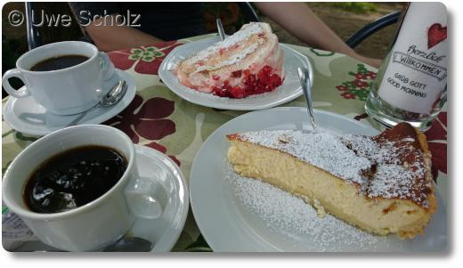

Wanderung im Odenwald zur Starkenburg
Vergangene Woche haben wir eine unserer längsten Wanderungen bisher im Odenwald unternommen. Start- und Zielort war Heppenheim an der Bergstraße.

Von Heppenheim ging es in einem gro√üen Schlenker durch den Odenwald, auf vielen schattigen Waldwegen, bis wir schlie√ülich an der Starkenburg ankamen. Der Ausblick vom dortigen Biergarten auf die Stadt und auf den Kuchen entsch√§digt f√ºr die zur√ºckligenden 20 Kilomenter. üòä
Zwei Tage vor unserer Wanderung hat es gut geregnet und wir mussten daher aufpassen, weil der Weg mit vielen Weinbergschnecken besetzt war:
Ausblick vom Biergarten:
Ausblick auf Kaffee und Kuchen:
Wer sich den detailierten Track für sein Navi herunterladen möchte, findet die gpx-Datei auf GPSies.com.
Das Bild vom Streckenverlauf habe ich über die Seite GPSies.com erstellt, das Kartenmaterial stammt von OpenStreetMap.